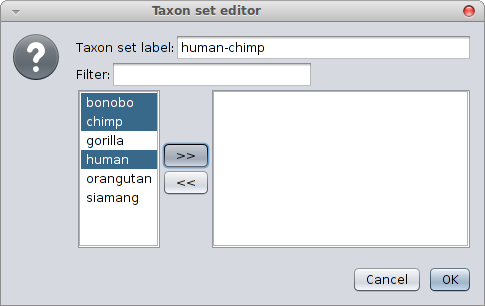
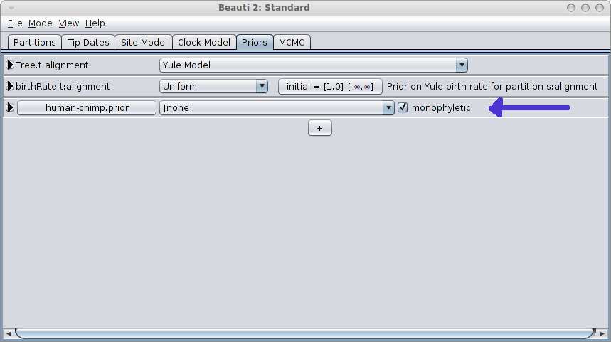

Constraining a clade to be monphyletic is easiest done in via BEAUti from the “Priors” tab and selecting the “+” button at the bottom of the screen. A window is shown where you can specify the taxa of a clade and the name of the clade.

When closing, a new entry appears in the priors panel. Click the monophyletic checkbox to ensure the clade is forced to be monophyletic.

Firstly create a distribution that contains the group you want to constrain to be monophyletic. By adding the distribution element directly to the XML inside the element with id “prior” like so:
Note 1: the tree constrained here is Tree.t:xyz — you need to change xyz so that it matches the name of the tree you want to constrain.
Note 2: if the taxon is already specified before (because it is already in another constraint, or when you start with a SNAPP analysis), you should refer to that taxon instead of creating a new one, like so: <taxon idref="Homo_sapiens"/>, so leave out the spec attribute and replace id with idref.
To constrain the taxonset to be monophyletic, add a monophyletic="true" attribute to the distribution:
If you add this to the log file then it displays the height of the ph clade in the log file.
{% highlight xml %}But you will have to provide a starting tree that is valid to begin with so the default random starting tree won’t work. The easiest way to do this is by using a randomtree as starting tree (the default in BEAUti) or to supply your own initial tree. See this tutorial for details of how to do this.
You can use this technique to root the sampled trees using an outgroup. First create a distibution, as above, containing your ingroup taxa. Then follow the above instructions to keep your ingroup monophyletic with respect to the outgroup. Note that this is essentially a prior and you may wish to estimate the posterior probability that you outgroup is indeed an outgroup.